전자계산기기사 (2019-09-21 기출문제)
1과목: 시스템 프로그래밍
1. 우선순위 스케줄링 알고리즘에서 발생할 수 있는 무한연기 현상을 해결하기 위해서 제안된 방법은?
- 구역성(locality)
- 에이징(aging) 기법
- 세마포어(semaphore)
- 문맥전환(context switching)
(정답률: 66%)

2. 문맥제어 언어에 대한 설명으로 틀린 것은?
- 기종에 상관없이 동일하다.
- 프로그램의 순서적 실향을 지시한다.
- 프로그램 및 시스템 운영에 관한 지시를 운영체제에게 전달한다.
- 입출력 장치의 배당을 위한 프로그램에서 정의된 논리적 장치와 물리적 장치를 연결한다.
(정답률: 68%)
3. 시스템 소프트웨어에 대한 설명으로 틀린 것은?
- 시스템의 제어 및 관리를 수행한다.
- 하드웨어와 응용소프트웨어를 연결하는 역할을 수행한다.
- 항공예약, 자재관리, 인사관리 시스템 등이 시스템 소프트웨어의 대표적인 사례이다.
- 프로그램을 주기억장치에 적재시키거나 인터럽트 관리, 장치관리 등의 기능을 담당한다.
(정답률: 76%)
4. 프로그램의 소스 코드가 실제 수행되기까지의 순서로 옳은 것은?
- compiler→loader→linkage editor
- compiler→linkage editor→loader
- loader→compiler→linkage editor
- linkage editor→compiler→loader
(정답률: 79%)
5. Global Reference를 절대번지로 바꾸거나 Kinking와 상대번지를 바꾸는 과정 등과 같이 변하기 쉬운 것을 확고하게 결정짓는 것을 무엇이라고 하는가?
- Binding
- Thrashing
- Paging
- Parsing
(정답률: 62%)
6. 어셈블리어에서 논리적인 비교와 결과가 양수 또는 음수인지를 검사하여 상태 레지스터의 상태 비트를 설정하는 명령은?
- NEG
- CWD
- LEA
- TEST
(정답률: 40%)
7. 교착 상태 발생의 필요조건이 아닌 것은?
- 선점 조건
- 상호 베제 조건
- 환형 대기 조건
- 점유 및 대기 조건
(정답률: 70%)
8. 프로그램에서 오류가 발생한 위치와 오류가 발생하게 된 원인을 추적하기 위하여 사용되는 것은?
- text editor
- tracer
- linker
- binder
(정답률: 79%)
9. 워킹 셋에 대한 설명으로 틀린 것은?
- 프로세스가 일정 시간 동안 자주 참조하는 페이지들의 집합이다.
- 데닝이 제안한 것으로, 프로그램의 Locality 특징을 이용한다.
- 프로세스가 실행되는 동안 주기억장치를 참조할 때 일부 페이지만 집중적으로 참조하는 성질을 의미한다.
- 자주 참조되는 워킹 셋을 주기억장치에 상추시킴으로써 페이지 부재 및 페이지 교체 현상을 줄일 수 있다.
(정답률: 57%)
10. 로더(Loader)의 기능이 아닌 것은?
- Link
- compile
- Allocation
- Relocation
(정답률: 67%)
11. 어셈블리에서 어떤 기호적 이름에 상수 값을 할당하는 명령어는?
- EQU
- INT
- INCLUDE
- ASSUME
(정답률: 56%)
12. 시간구역성(temporal locality)의 예로 틀린 것은?
- 스택(stack)
- 순환(looping)
- 배열순례(array traversal)
- 집계(totaling)에 사용되는 변수
(정답률: 38%)
13. 운영체제의 기능이 아닌 것은?
- 자원보호 기능
- 언어번역 기능
- 자원 스케줄링 기능
- 기억장치 관리 기능
(정답률: 73%)
14. 데이터가 입력된 순간에 곧바로 작업을 처리하는 컴퓨터 시스템으로 화학공장 또는 원자력 발전소 등의 공정 제어 시스템, 은행의 온라인 처리 시스템 등에 사용되는 시스템은?
- 실시간 시스템(real time system)
- 오프라인 시스템(off-line system)
- 다중처리 시스템(multiprocessing system)
- 일괄처리 시스템(batch system)
(정답률: 77%)
15. Assembly 언어에서 제 1번지부에 표현한 번호의 register에 다음 명령의 번지를 기억시킨 후, 제 2번지부에 표현한 번호의 register가 기억한 번지로 분기하는 명령어는?
- BR
- BALR
- USING
- START
(정답률: 48%)
16. 페이징 시스템에서 페이지의 크기에 관한 설명으로 틀린 것은?
- 페이지의 크기가 적을수록 페이지테이블의 크기가 커진다.
- 페이지의 크기가 클수록 내부단편화가 감소한다.
- 페이지의 크기가 클수록 참조되는 정보와 무관한 정보들이 많이 적재된다.
- 작은 크기의 페이지가 보다 적절한 작업세트를 유지할 수 있다.
(정답률: 50%)
17. 매크로 프로세서(Macro Processor)의 기본 수행 작업에 해당하지 않는 것은?
- 매크로 확장
- 매크로 정의 인식
- 매크로 호출 인식
- 매크로 정의 확장
(정답률: 73%)
18. Formal grammar의 4가지 형태에 해당하지 않는 것은?
- Regular grammar
- Context-free grammar
- Context sensitive grammar
- Generator grammar
(정답률: 50%)
19. 구문 분석기가 올바른 문장에 대해 그 문장의 구조를 트리로 표현한 것으로 루트, 중간, 단말 노드로 구성되는 트리는 무엇인가?
- 인덱스 크리
- 주소 크리
- 파스 크리
- 산술 크리
(정답률: 68%)
20. 어셈블러의 이중 패스(Two Pass)로 구성하는 주된 이유는?
- 오류 처리
- 어셈블러의 크기
- 다양한 출력 정보
- 전향 참조(Forward Reference)
(정답률: 67%)
2과목: 전자계산기구조
21. 인터럽트 시스템에서 인터럽트 전처리루틴(pre processing routine)의 기능은?
- 인터럽트 불능 인스트럭션을 수행하여 모든 인터럽트 장치가 인터럽트 요청을 못하게 한다.
- 인터럽트처리를 한다.
- 인터럽트의 중첩이 가능한 경우 인터럽트를 선별적으로 가능 혹은 불가능하게 한다.
- 보존된 프로그램의 상태를 복구시키고 중단된 프로그램의 수행이 계속되게 한다.
(정답률: 43%)
22. 우선순위 중재 방식 중 중재동작이 끝날 때마다 모든 마스터들이 우선순위가 한 단계씩 낮아지고, 가장 우선순위가 낮았던 마스터가 최상위 우선순위를 가지는 방식은?
- 회전우선순위
- 임의우선순위
- 동등우선순위
- 최소-최근 사용 우선순위
(정답률: 68%)
23. 기억장치에 대한 설명으로 틀린 것은?
- 기억장치는 주기억장치와 보조기억장치로 나눈다.
- 주기억장치는 롬과 램으로 구성할 수 있다.
- 접근방식은 직접 접근방식과 순차적 접근방식이 있다.
- 기억장치의 접근속도는 모두 일정하다.
(정답률: 76%)
24. 전가산기(full adder)의 Carry 비트를 논리식으로 나타낸 것은?
- C=X⊕Y⊕Z
- C=X‘ Y+X' Z+YㆍZ
- C=XㆍY⊕(X⊕Y)Z
- C=X⊙Y⊙Z
(정답률: 42%)
25. 다음 회로의 출력 Y 값은?
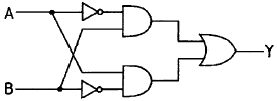
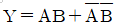
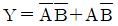
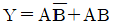
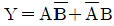
(정답률: 79%)
26. 명령어를 구성하는 ㅁ병령어 내 비트들의 할당에 영향을 주는 요소가 아닌 것은?
- 버스 개수
- 주소지정방식
- 주소 영역
- 연산코드
(정답률: 29%)
27. 비휘발성 메모리가 아닌 것은?
- ROM
- RAM
- 자기 코어
- 보조 기억장치
(정답률: 69%)
28. 4비트 데이터 0101을 해밍코드(hamming code)로 표현하려고 한다. 코드의 구성은 P1 P2 D3 P4 D5 D6 D7과 같이 한다. 여기서 Pn은 패리티 비트를 의미하고, Dn은 데이터 즉, 0101을 의미한다. 변환된 해밍코드는?
- 0 0 0 0 1 0 1
- 0 0 0 1 1 0 1
- 0 1 0 0 1 0 1
- 0 1 0 1 1 0 1
(정답률: 32%)
29. 임의의 컴퓨터 시스템에서 비트 슬라이스의 길이가 16이고, 단어의 길이가 8인 경우, 최대 병렬수행도 P 값은?
- 128
- 2
- 24
- 0.5
(정답률: 49%)
30. 1개의 Full adder를 구성하기 위해서는 최소 몇 개의 Half adder가 필요한가?
- 1개
- 2개
- 3개
- 4개
(정답률: 72%)
31. 마이크로프로그램을 이용하는 제어장치의 구성요소가 아닌 것은?
- 순서 제어 모듈
- 서브루틴 레지스터
- 명령 레지스터
- 제어버퍼 레지스터
(정답률: 30%)
32. 인터럽트의 요청이 있을 경우에 처리하는 내용 중 가장 관계 없는 것은?
- 중앙처리장치는 인터럽트를 요구한 장치를 확인하기 위하여 입출력장치를 폴링한다.
- PSW(Program Status Word)에 현재의 상태를 보관한다.
- 인터럽트 서비스 프로그램은 실행하는 중간에는 다른 인터럽트를 처리할 수 없다.
- 인터럽트를 요구한 장치를 위한 인터럽트 서비스 프로그램을 실행한다.
(정답률: 44%)
33. 기억장치의 용량을 나타내는 단위로 틀린 것은?
- 1GB(Giga Byte)=230 Byte
- 1TB(Tera Byte)=1024 PB(Peta Byte)
- 1MB(Mega Byte)=1024 KB Byte)
- 1MB((Mega Byte)=220Byte)
(정답률: 78%)
34. 400MHz 프로세서에서 어떤 프로그램을 실핼할 때 총 2백만 개의 명령어들이 실행되었고, 각 명령어의 유형과 비율은 아래 표와 같이 주어졌다고 가정할 때 평균 CPI와 MIPS(Millions of instructions per second)율은 각각 계산한 결과로 옳은 것은? (단, MIPS율의 경우 소숫점 이하 숫자는 버림한다.)
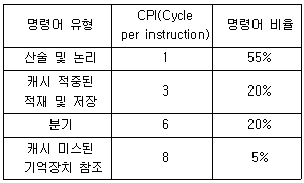
- CPI=3.2, MIPS율=130
- CPI=2.75, MIPS율=145
- CPI=2.75, MIPS율=130
- CPI=3.2, MIPS율=140
(정답률: 20%)
35. 다중처리기 상호 연결 방법 중 시분할 공유버스를 설명한 것은?
- 시분할 공유와 기타 방법의 혼합
- Multiprocessor를 비교적 경제적인 망으로 구성
- 공유버스 시스템에서 버스의 수를 기억장치의 수만큼 증가시킨 구조
- 프로세서, 기억장치, 입출력 장치들간에 하나의 버스 통신로만을 제공하는 방법
(정답률: 39%)
36. 하드웨어 우선순위 인터럽트의 특징으로 가장 옳은 것은?
- 가격이 싸다.
- 응답속도가 빠르다.
- 유연성이 있다.
- 우선 순위는 소프트웨어로 결정한다.
(정답률: 54%)
37. 마이크로프로그램을 이용한 제어에서 제어 단어의 각 비트가 한 마이크로 연산 실행 여부를 제어하는 제어 신호로 사용되는 마이크로 명령어 형식으로 옳은 것은?
- 수평적 마이크로 명령어
- 수직적 마이크로 명령어
- 비트-by-비트 마이크로 명령어
- 제어 비트 마이크로 명령어
(정답률: 28%)
38. 다음은 병렬처리 컴퓨터에서 사용하는 기억장치를 설명한 것이다. 기억된 정보의 일부분을 참조하여 원하는 정보가 기억된 위치를 알아낸 후, 그 위치에서 나머지 정보에 접근할 수 있는 기억장치는?
- ROM(Read Only Memory)
- RAM(Random Access Memory)
- CAM(Content Addressable Memory)
- Cache Memory)
(정답률: 65%)
39. 디지털 IC의 전달지연 시간이 가장 짧은 것부터 차례로 나열한 것은?
- ECL-MOS-CMOS-TTL
- TTL-ECL-MOS-CMOS
- ECL-TTL-CMOS-MOS
- MOS-TTL-ECL-CMOS
(정답률: 50%)
40. X=950.4, Y=82를 더한 결과를 정규화한 값은?
- 1032.4
- 1032*100
- 1.0324*103
- 0.10324*104
(정답률: 36%)
3과목: 마이크로전자계산기
41. 다음 중 간접 주소(indirect address)에 대한 설명으로 옳은 것은?
- 그 자료를 얻기 위하여 정확히 한 번 기억 장치에 접근해야 한다.
- 명령문 내의 번지는 실제 데이터의 주소를 표시하고 있다.
- 다른 주소 방식들보다 신속하게 데이터에 접근할 수 있다.
- 명령문 내의 번지는 실제 데이터의 위치를 찾을 수 있는 번지가 들어 있는 장소를 표시한다.
(정답률: 57%)
42. 제어 메모리에서 번지를 결정하는 방법과 관련이 없는 것은?
- 제어 어드레스 레지스터를 하나씩 증가
- 플래그 레지스터 비트에 따라 무조건 분기
- 매크로 동작 비트로부터 ROM으로 매핑
- 마이크로 명령어에서 지정하는 번지로 무조건 분기
(정답률: 20%)
43. 입출력 장치로의 병렬 데이터 전송 중에서 IEEE-488 표준 규격이 제정되어 있으며, 계측기에서 대부분 채택하고 있는 인터페이스의 명칭은?
- S-100
- GPIB
- RS-232C
- RS-485
(정답률: 29%)
44. 다음 중 UART가 수행할 수 있는 동작이 아닌 것은?
- 외부 전송을 위해 페리티 비트를 추가한다.
- 키보드나 마우스로부터 들어오는 인터럽트를 처리한다.
- 데이터를 외부로 내보낼 때에는 시작비트와 정지비트를 추가한다.
- 바이트들을 외부에 전달하기 위해 하나의 병렬 비트 스트림으로 변환한다.
(정답률: 38%)
45. TTL 출력 종류 중 논리값이 0도 아니고 1도 아닌, 고임피던스 상태를 가지며, 특히 bus 구조에 적합한 것은?
- Tri-state 출력
- TTL 표준출력
- Totem-pole 출력
- Open collector 출력
(정답률: 49%)
46. 그림과 같은 어느 프로그램 중 0123 번지에 CALL A 명령이 있다. 이 CALL A를 수행한 후 PC에 기억된 값은? (단, 모든 명령문은 1바이트라 한다.)
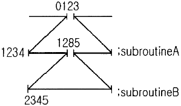
- 0124
- 1234
- 1285
- 2345
(정답률: 47%)
47. CMOS형 IC의 장점으로 옳은 것은?
- 소비 전력이 크다.
- 잡음 여유도가 크다.
- P형이나 N형보다 공정이 간단하다.
- 전원 전압 범위가 작다.
(정답률: 40%)
48. 주기억장치와 중앙처리장치와의 속도 차이를 해결하기 위하여 사용되는 기억장치는?
- 캐시기억장치
- 가상기억장치
- 보조기억장치
- 연상기억장치
(정답률: 58%)
49. 인출 사이클(frtch cycle) 수행 시 적합하지 않은 ㄱ마이크로 오퍼레이션은?
- DBUS←M[ABIS]
- IR←DBUS, RD←O
- ABUS←PC, RD←1
- M[ABUS]←DBUS, WR←1
(정답률: 39%)
50. 표준 비동기 직렬 데이터 전송에서 데이터 양식에 속하지 않는 것은?
- a atart bit(0)
- 5 to 8 data bit
- a status bit
- parity bit
(정답률: 27%)
51. 다음의 CPU 회로에서 점선 부분의 역할은 무엇인가?
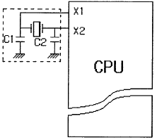
- CPU를 리셋(Reset)시키기 위한 부분이다.
- CPU에 클록(Clock)을 공급하기 위한 부분이다.
- CPU의 공급전원을 일정하게 하기 위한 부분이다.
- CPU에 인터럽트(Interrupt) 신호가 입력되는 부분이다.
(정답률: 50%)
52. 다음 중에서 기억장치로부터 전송된 데이터를 일시적으로 저장하는 레지스터는?
- MAR
- MBR
- ALU
- 채널
(정답률: 52%)
53. 컴퓨터 제어장치의 기본 사이클에 속하지 않는 것은?
- fetch cycle
- direct cycle
- execute cycle
- interrupt cycle
(정답률: 52%)
54. DMA 제어장치가 꼭 갖추어야 할 필수 레지스터가 아닌 것은?
- status register
- program register
- data register
- address register
(정답률: 46%)
55. 다음 중 특정 비트만 0으로 하기 위한 연산은?
- OR 연산
- AND 연산
- EX-OR 연산
- 보수 연산
(정답률: 34%)
56. 연산의 결과 올림수가 발생하면 1이 되는 flag는 어느 것인가?
- zero flag
- sing flag
- parity flag
- carry flag
(정답률: 52%)
57. 데이지 체인(Daisy chain) 기법을 가장 올바르게 설명한 것은?
- 3개 이상의 장치들이 핸드셰이킹(hand shaking) 기법을 사용하는 것
- 주소가 서로 상충(collision)하는 장치들을 방지하기 위해 조정하는 기법
- 전압이 높은 입력이 필요한 장치에서부터 낮은 입력의 장치까지 순차로 엮는 방식
- 인터럽트 확인(Interrupt acknowledge) 신호를 우선순위가 제일 높은 장치부터 받게 하는 기법
(정답률: 36%)
58. DRAM(Dynamic Random Access Memory)에 대한 설명으로 옳은 것은?
- Content Addressable 메모리이다.
- 주기적으로 메모리를 refresh하여야 한다.
- Dynamic Relocation이 용이한 메모리이다.
- 전원이 끊어져도 메모리 상태는 지워지지 않는다.
(정답률: 52%)
59. 고정배선제어에 비해 마이크로프로그램을 이용한 제어 방식이 가지는 장점으로 틀린 것은?
- 동작 속도를 극대화할 수 있다.
- 제어 논리의 설계를 프로그램 작업으로 수행할 수 있다.
- 개발기간을 단축시킬 수 있고 에러에 대한 진단 및 수정이 쉽다.
- 변경 가능한 제어기억소자를 사용하면 제어의 변경이 가능하다.
(정답률: 42%)
60. 비동기식 입출력 장치의 특징이 아닌 것은?
- 오픈 루트 방식을 사용할 수 있다.
- 핸드셰이킹 방식을 사용할 수 없다.
- 송수신 장치가 자신의 타이밍에 독립적으로 동작한다.
- 동작의 일치를 위해 동기용의 제어 신호를 상대에 전송한다.
(정답률: 34%)
4과목: 논리회로
61. 다음 중 SR 플립플롭의 부정 상태가 출력으로 나타나지 않도록 개량하여 부정 상태 없이 불변, 0, 1 토글의 4가지 출력을 가지는 플립플롭은?
- D 플립플롭
- T 플립플롭
- H 플립플롭
- JK 플립플롭
(정답률: 66%)
62. 다음의 회로와 같은 결과를 얻을 수 있는 게이트(gate)는 어느 것인가? (단, 다이오드는 이상적인 소자이다.)
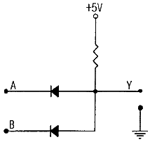
- AND
- OR
- NOR
- XOR
(정답률: 50%)
63. 다음 논리회로의 논리식으로 옳은 것은?
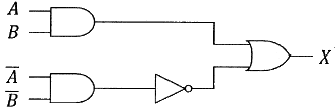
- X=AB
- X=A+B
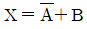
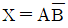
(정답률: 49%)
64. 2진수 10110의 2의 보수는?
- 10001
- 01010
- 01001
- 01011
(정답률: 58%)
65. BCD의 01000010과 00110110의 합을 10진수로 표현하면?
- 57
- 78
- 111
- 121
(정답률: 40%)
66. 10진수 0.4375를 2진수로 변환한 것으로 옳은 것은?
- 0.1110(2)
- 0.1101(2)
- 0.1011(2)
- 0.0111(2)
(정답률: 56%)
67. 다음 식
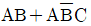
를 가장 간략화한 것은?- AC
- AB
- AB+AC
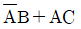
(정답률: 53%)
68. 다음 회로의 출력 F에 대한 회로식으로 틀린 것은? (단, x는 MSB, z는 LSB이다.)
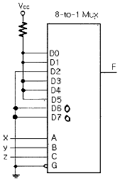
- y'+x'z
- xy'+y'z'+x'z
- x'y;+y'z'+xy'
- y'z'+x'z+y'z
(정답률: 20%)
69. 다음 회로에서 B의 주기가 1000ns라면, 클록주파수는 몇 MHz 인가?
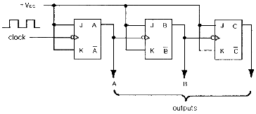
- 1
- 2
- 4
- 8
(정답률: 22%)
70. 3초과 코드(3-excess code) 0101을 BCD코드로 변환하면?
- 0101
- 0100
- 0011
- 0010
(정답률: 42%)
71. 리플 카운터의 특징으로 틀린 것은?
- 비동기 카운터이다.
- 카운트 속도가 동기식 카운터에 비해 느리다.
- 최대 동작 주파수에 제한을 받지 않는다.
- 회로 구성이 비교적 간단하다.
(정답률: 50%)
72. 2입력 Exclusive-OR에 대한 설명으로 옳은 것은?
- 입력이 같을 때 출력=0, 서로 다를 때 출력=0이 발생
- 입력이 같을 때 출력=0, 서로 다를 때 출력=1이 발생
- 입력이 같을 때 출력=1, 서로 다를 때 출력=0이 발생
- 입력이 같을 때 출력=1, 서로 다를 때 출력=1이 발생
(정답률: 65%)
73. 동기형 15진 계수기를 구성하기 위한 최소의 플립플롭의 개수는?
- 2
- 3
- 4
- 5
(정답률: 63%)
74. 다음의 진리표에 해당하는 논리식으로 옳은 것은?
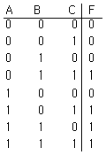
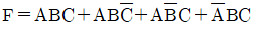
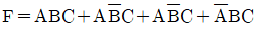
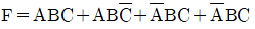
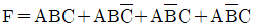
(정답률: 57%)
75. 디지털 회로에서 clock pulse가 오기 전에 입력하고자 하는 입력 자료가 미리 대기하고 있어야 원하는 결과를 얻을 수 있다. 이 때 대기하는 시간을 무엇이라 하는가?
- propagation delay time
- Setup time
- Hold time
- Access time
(정답률: 23%)
76. 다음 중 입력이 모두 0일 때에만 출력이 1이 되는 게이트는?
- OR 게이트
- AND 게이트
- NOR 게이트
- XOR 게이트
(정답률: 56%)
77. BCD를 10진수로 변환하는 회로는?
- Decoder
- Encoder
- Multiplexer
- Demultiplexer
(정답률: 44%)
78. 그림과 같은 구성도는 어떤 플립플롭인가?
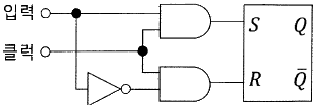
- SR 플립플롭
- JK 플립플롭
- D 플립플롭
- T 플립플롭
(정답률: 34%)
79. 레지스터의 기능으로 옳은 것은?
- 펄스를 발생시킨다.
- 정보를 일시 저장한다.
- 계수기의 대용으로 쓰인다.
- 회로를 동기시킨다.
(정답률: 65%)
80. 다음 회로에서 입력이 A=1, B=1, Ci=1일 때 출력 X화 Y의 값으로 옳은 것은?
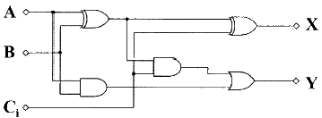
- X=0, Y=0
- X=0, Y=1
- X=1, Y=0
- X=1, Y=1
(정답률: 66%)
5과목: 데이터통신
81. 연속적인 신호파형에서 최고주파수가 W(Hz)일 때 나이퀴스트(Nyquist) 표본화 주기(T)는?
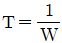
- T=W
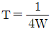
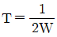
(정답률: 64%)
82. HDLC 프레임 구조에 포함되지 않는 것은?
- BCC
- FCS
- 주소부
- 제어부
(정답률: 49%)
83. 다음 내용이 설명하는 것은 무엇인가?
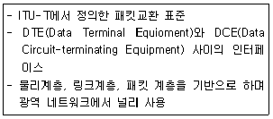
- SYNC
- TCP/IP
- UDP
- X.25
(정답률: 54%)
84. 통신 속도가 2400[baud]이고, 4상 위상변조를 하는 경우 데이터의 전송속도[bps]는?
- 2400
- 4800
- 9600
- 19200
(정답률: 58%)
85. 송신 스테이션이 데이터 프레임을 연속적으로 전송해 나가다가 NAK를 수신하게 되면 에러가 발생한 프레임을 포함하여 그 이후에 전송된 모든 데이터 프레임을 재전송하는 방식은?
- Stop-and-wait ARQ
- Go-back-N ARQ
- Selective-Repeat ARQ
- Non Selective-Repeat ARQ
(정답률: 69%)
86. 샤논의 정의에서 채널용량을 결정하는 요소가 아닌 것은?
- 대역폭
- 신호전력
- 잡음전력
- 변조방식
(정답률: 55%)
87. IEEE 802.11 워킹 그룹의 무선 LAN 표준화 현황 중 QoS 강화를 위해 MAC 지원 기능을 채택한 태스크 그룹은?
- 802.11a
- 802.11b
- 802.11g
- 802.11e
(정답률: 38%)
88. 대역폭(bandwidth)에 대한 설명으로 옳은 것은?
- 최고 주파수를 의미한다.
- 최저 주파수를 의미한다.
- 최고 주파수의 절반을 의미한다.
- 최고 주파수와 최저 주파수 사이 간격을 의미한다.
(정답률: 75%)
89. PSK에서 반송파 간의 위상차는? (단, M은 진수이다.)
- π/M
- 2π/M
- π/2M
- 2πM
(정답률: 49%)
90. 다음 중 패킷 교환망의 설명으로 틀린 것은?
- 가상 회선 방식과 데이터그램 방식이 있다.
- 전송에 실패한 패킷의 경우 재전송이 가능하다.
- 패킷단위로 헤더를 추가하므로 패킷별 오버헤드가 발생한다.
- 공간분할 회선교환 방식으로 기계식이나 전자식 교환기와 통신회선을 그대로 이용하는 방식이다.
(정답률: 46%)
91. ATM에 대한 설명으로 틀린 것은?
- 고정길이의 셀(cell) 단위로 데이터를 전송하므로 고속통신에 적합하다.
- 멀티미디어 전송에 적합하다.
- 헤더에 대해서 오류검출을 수행한다.
- ATM 셀(cell)은 48바이트의 헤더와 5바이트의 데이터로 구성된다.
(정답률: 46%)
92. OSI 7계층 중 데이터 링크 계층의 프로토콜은?
- PPP
- RS-232C/V.24
- EIA-530
- V.22bis
(정답률: 49%)
93. 주파수 분할 다중화(FDM)에서 보호대역(Guard band)이 필요한 이유는?
- 주파수 대역폭을 축소시키기 위함이다.
- 신호의 세기를 크게 하기 위함이다.
- 채널 간의 상호 간섭을 방지하기 위함이다.
- 보다 많은 채널을 좁은 주파수대역에 싣기 위함이다.
(정답률: 73%)
94. 외부라우팅 프로토콜이며 거리벡터인 프로토콜로 상이한 시스템에 있는 라우터간에 라우팅 정보를 교환하는데 사용하는 프로토콜은?
- RIP
- OSPF
- EXP
- BGP
(정답률: 21%)
95. TCP/IP 관련 프로토콜 중 인터넷 계층에 해당하는 것은?
- SNMP
- HTTP
- TCP
- ICMP
(정답률: 47%)
96. 컴퓨터끼리 또는 컴퓨터와 단말기 사이 등에서 정보교환이 필요한 경우, 이를 원활하게 하기 위하여 정한 여러 가지 통신 규약을 무엇이라 하는가?
- Protocol
- Link
- Terminal
- Interface
(정답률: 73%)
97. 전파가 다중 반사되어 수신점에 도달하게 되므로 이들 전파의 도달시간 차이로 인해 수신점에서 심벌(symbol)이 겹치는 현상이 일어나는데 이를 무엇이라고 하는가?
- 동일채널간섭
- 지연확산
- 도플러 효과
- 대척점 효과
(정답률: 37%)
98. 아날로그 데이터를 디지털 데이터로 변환시키는 표본화 과정 중 일정한 주기마다 표본화하여 생성되는 펄스는?
- PSM
- PAM
- FM
- AM
(정답률: 56%)
99. HDLC 프레임 형식 중 프레임의 시작과 끝을 나타내며 고유한 비트 패턴으로 표시되는 것은? (문제 오류로 가답안 발표시 2번으로 발표되었지만 확정답안 발표시 모두 정답처리 되었습니다. 여기서는 가답안인 2번을 누르면 정답 처리 됩니다.)
- 정보영역
- 제어영역
- 주소영역
- 임계영역
(정답률: 64%)
100. HDLC(High level Data Link Control)에 대한 설명으로 틀린 것은?
- 문자 지향형 전송 프로토콜이다.
- 정보 프레임, 감독 프레임, 비번호 프레임이 존재한다.
- 감독 프레임은 정보(데이터) 필드를 포함하지 않는다.
- CRC 방식을 위한 2바이트 또는 4바이트 FCS를 포함한다.
(정답률: 46%)